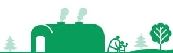
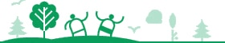
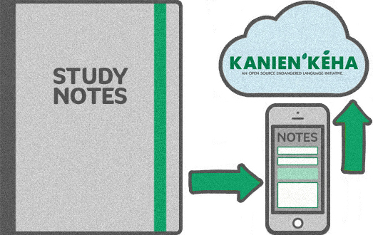

Kanienkeha.net
An open source initiative dedicated to the endangered Kanienkeha (Mohawk) language. New content is published every week, and the project relies on small donations to keep going.
Support us on Patreon About the project numbers
numbersWelcome from the founder
She:kon (hello)
This site was built so the community can develop online resources for the Kanienkeha language. With contributions from visitors and elders, the aim is a digital inventory of the language, along with discussion of the cultural meaning behind each word.
If the dictionary reaches roughly 10,000 words, the project moves to a next phase: building a Google-style translator with audio to help with pronunciation.
Nia:wen (thank you)
— Benjamin Doolittle


Most recent entries
Phrases
Commands — daily routine
- Sátien tánon tesatská:honSit down and eat
- SatsheronniánionGet dressed
- SahtsóhareWash your hands
- SatkonhsóhareWash your face
- SatkeróthiwhBrush your hair
- Satko’tsón:niFix your hair
- Satá:wenTake a bath
- Satenaktahserón:niMake your bed
- SatkétskoWake up
- SatenawiróhareBrush your teeth
Occupations
- Shakoia’tárha’Photographer
- Tehatenia’taranónnha’Goalie
- Tsi Nikaio’tenhserò:ten’sOccupations (the category)
- Ísi’na’karon’iati IehrethaAstronaut
- Kanonhkwa’tsherón:nisPharmacist
- Karistatsi Roio’tensSteelworker (male)
- Karistatsi Iakio’tensSteelworker (female)
- Ka’serehkówa Ratórie’sTruck driver (male)
- Ka’serehkowa Iotórie’sTruck driver (female)
- Katshé:nen TehshakóhsnieVeterinarian
- Kawennaráhstha Iakoió’teComputer worker (female)
- Kawennaráhstha roió’teComputer worker (male)
- Ohén:ton Í:rate ne IonterihwaienstahkhwaniónhkhwaEducation director
- Okà:ra Shakotkèn:seOptometrist (male)
- Okà:ra iakotkèn:seOptometrist (female)
- Rahiá:tonsWriter (male)
- Iehiá:tonsWriter (female)
- Rahson’karaké:tasCarpenter (male)
- Iehson’karaké:tasCarpenter (female)
- Rahwiston:niBlacksmith
- RakhwahéhrhaWaiter
- RakontsheráhrhosPainter (male)
- IekontsheráhrhosPainter (female)
- Rana’tarón:nisBaker (male)
- Iena’tarón:nisBaker (female)
- IeráhsthaArtist (female)
- Rarihó’kwatsReporter (male)
- Ierihó’kwatsReporter (female)
- Raristí:seresEngineer or surveyor (male)
- Ieristí:seresEngineer or surveyor (female)
- Raristón:nisSteel fabricator
- IeristóserasWelder (female)
- RaronwarahéhrhaElectrician (male)
- IeronwarahéhrhaElectrician (female)
- Ra’swahseráta’sTaxidermist
- Ion’swáhthaFireman (female)
- Iontenhí:nonsSalesperson (female)
- Ratihonro’tahéhrha Ohné:kanos Aó:wenPlumber
- RatitsénhaiensCouncillors

Blog articles
- Mission Statement of the People of Grand River Country
- 5 Common Misconceptions Surrounding Endangered Languages
- Bonding with your child through your native language
- Thanksgiving Address: Giving Greetings to the Natural World
- How to use the single post index
There is also a separate blog.

Upload your notes
Language learners who take notes are invited to send them in so the language curators can archive them. As an open source project, the research grows as contributors share.
Upload notes